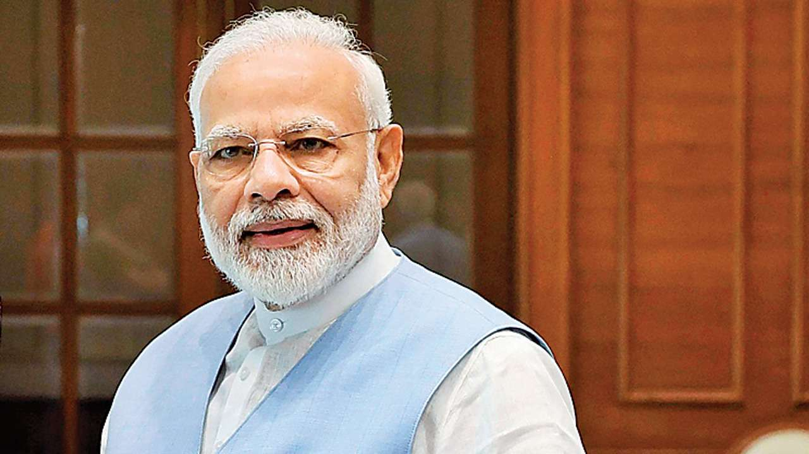

NARENDRA MODIJI

Narendra Modi, serving as India's Prime Minister since 2014, is recognized for economic reforms like GST, initiatives such as "Make in India" and "Digital India," prioritizing infrastructure development, proactive foreign policy engagement, and the implementation of social welfare programs. His leadership evokes diverse opinions, with commendation for his initiatives alongside debates on socio-economic and political aspects within India.